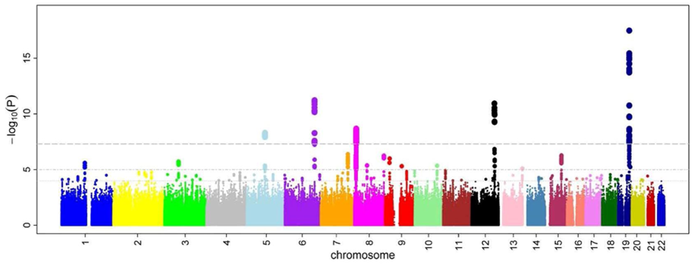
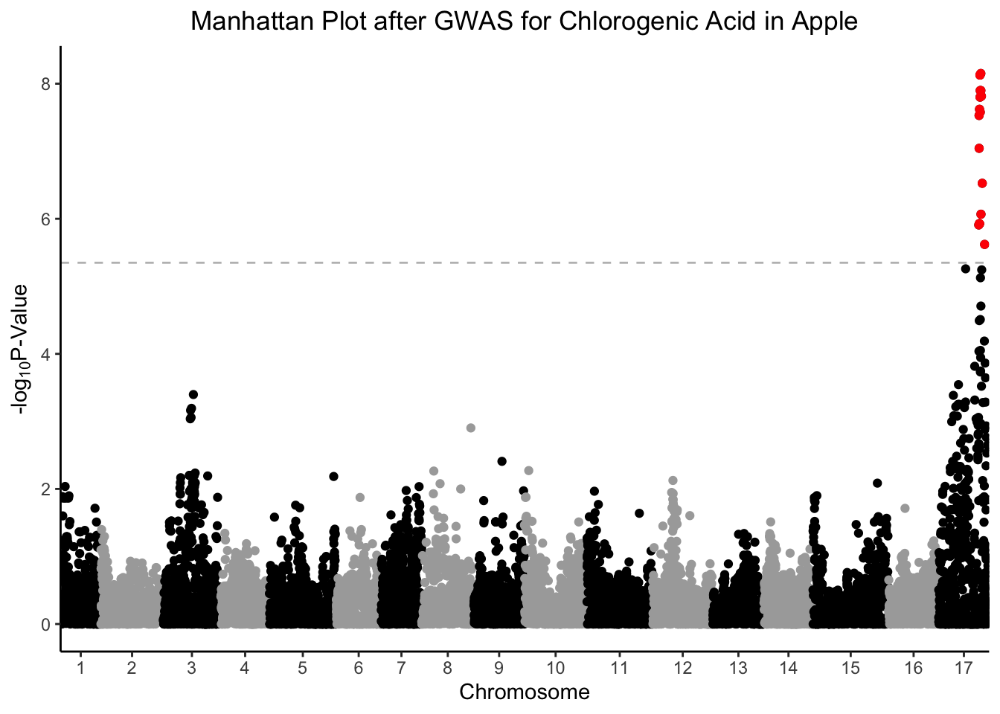
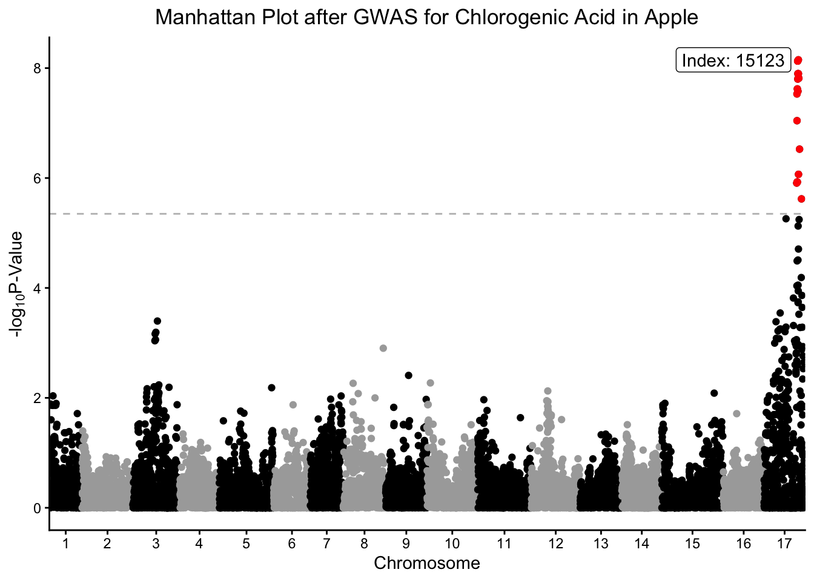
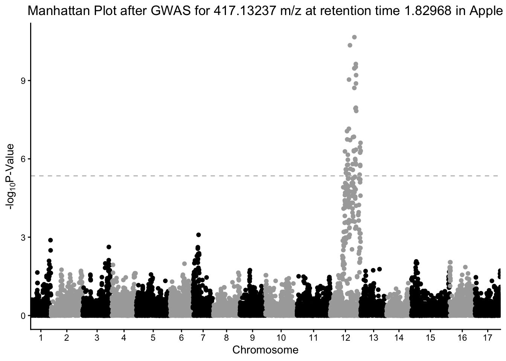
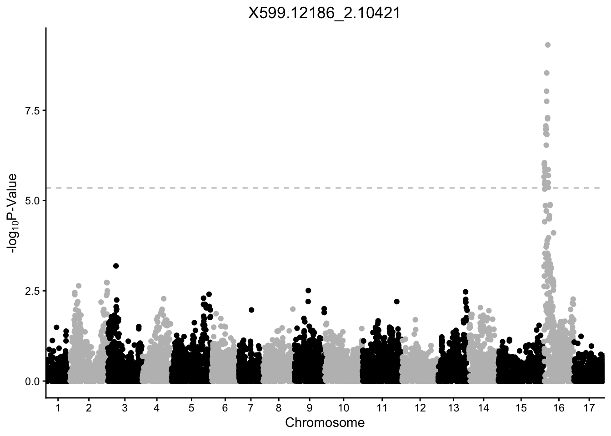
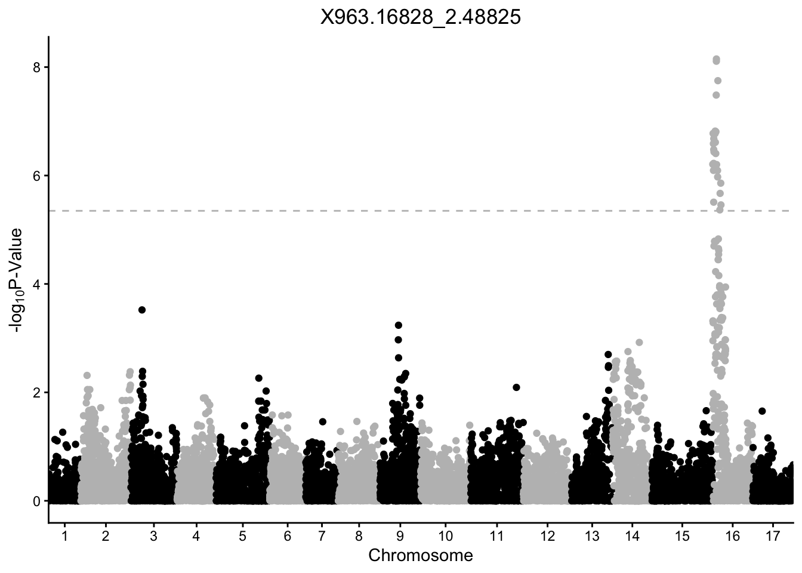
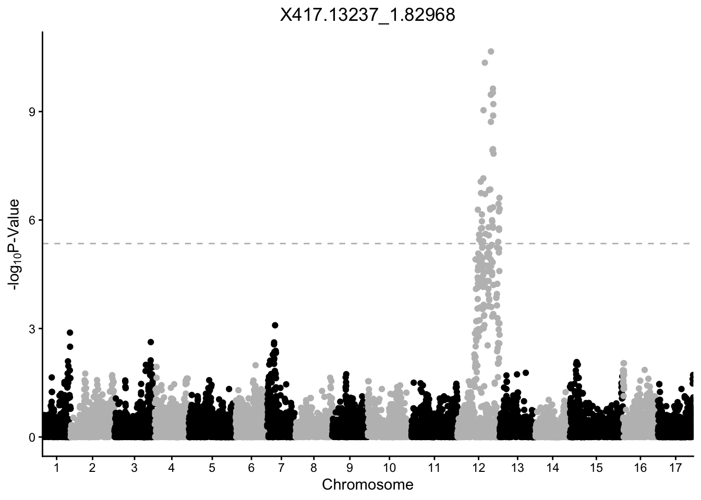
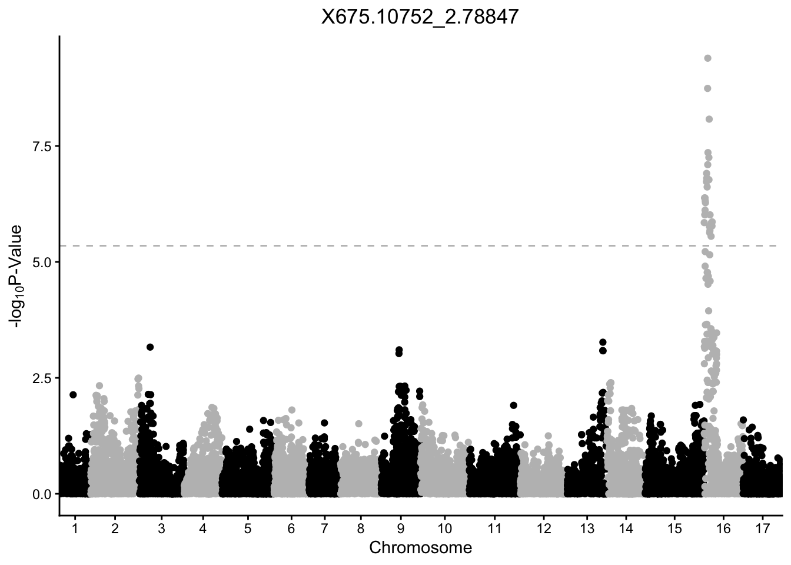
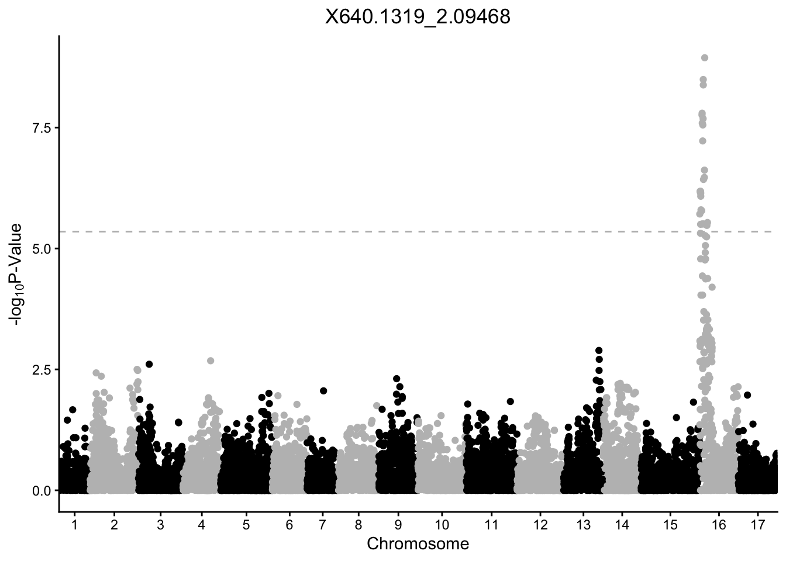
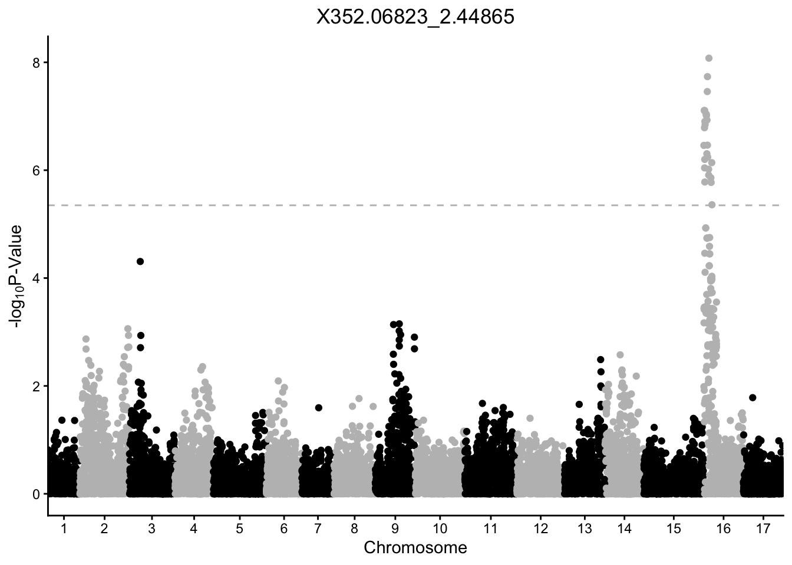

Manhattan Plots
Week 12
Introduction
Today we are going to continue putting it together in Module 4. Today’s material is on making Manhattan plots, which is a commonly used plot type for visualizing the result of genome wide association studies (GWAS). The name comes from its resemblance to the skyscrapers in Manhattan, poking above the background of the rest of the buildings.
The plot visualizes the relationship between a trait and genetic markers. The x-axis shows the position on each chromosome, and the y-axis shows the negative log (usually log10) p-value of the quantitative response of a trait to that specific marker. Negative log10 p-value is used because a significant p-value is always small, and this transformation converts low p-value to a number that can be seen easily among the background of non-significant associations.
If you work in genetics/genomics, it is likely you will create Manhattan plots. Even if you think you’ll never make one of these types of plots, its a useful activity to see additional ways of customizing your plots.
library(glue) # easy pasting
library(ggrepel) # repelling labels
library(tidyverse) # everythingRead in data
Today we are going to continue to use some different real research data collected by Emma Bilbrey from my team where we conducted many GWAS in apple. This work was published in 2021 in New Phytologist and can be found here. Click on Sections and go to Supporting Information and you’ll find Table S16. This data is more complex than a typical GWAS so we are only going to use a small portion of it.
We will be reading in Table S16 which includes the -log10 p-values for the GWAS conducted across all apples for all features found in the LC-MS negative ionization mode metabolomics dataset.
The data is present in a .csv file, so we will use the function read_csv() from the tidyverse. We want to import Supplemental Table 16.
This will take a second, its a big file.
gwas <- read_csv("data/nph17693-sup-0007-tables16.csv") # be patientRows: 11165 Columns: 4704
── Column specification ────────────────────────────────────────────────────────
Delimiter: ","
dbl (4704): Index, Linkage_Group, Genetic_Distance, X885.2037_2.98177, X525....
ℹ Use `spec()` to retrieve the full column specification for this data.
ℹ Specify the column types or set `show_col_types = FALSE` to quiet this message.What are the dimensions of this dataframe? What kind of object is it?
dim(gwas)[1] 11165 4704class(gwas)[1] "spec_tbl_df" "tbl_df" "tbl" "data.frame" Because this dataframe is so big, if we use head(gwas) we will get a print out of the first 6 rows, and all the columns. In thi case there are 4704 columns so that will be unwieldy.
Emma came up with a simple way to approach this when she was writing her code, she wrote herself a little function that she could use regularly to extract out the first 5 rows, and the first 5 columns, without having to index each time.
If we wanted to just see the first 5 rows, the first 5 columns we could do this:
gwas[1:5,1:5]# A tibble: 5 × 5
Index Linkage_Group Genetic_Distance X885.2037_2.98177 X525.1583_3.24969
<dbl> <dbl> <dbl> <dbl> <dbl>
1 1 1 0 0.176 0.117
2 3 1 0.002 0.0978 0.0166
3 4 1 0.003 0.169 0.0519
4 5 1 0.004 0.217 0.309
5 6 1 0.005 0.0548 0.110 head_short <- function(x){
x[1:5,1:5] # print first 5 rows and columns of an object
} Now instead of indexing all the time, we can just run head_short() which I think is easier. We will talk a little bit more about writing functions later today.
head_short(gwas)# A tibble: 5 × 5
Index Linkage_Group Genetic_Distance X885.2037_2.98177 X525.1583_3.24969
<dbl> <dbl> <dbl> <dbl> <dbl>
1 1 1 0 0.176 0.117
2 3 1 0.002 0.0978 0.0166
3 4 1 0.003 0.169 0.0519
4 5 1 0.004 0.217 0.309
5 6 1 0.005 0.0548 0.110 Data investigating
Let me provide you a little bit of info about this data:
Indexprovides a unique number identifier for each SNPLinkage_Groupindicates the chromosomeGenetic_Distancegives you the physical genetic distance on each chromosome- The rest of the columns represent a metabolomic feature, and the data in each cell represents the -log10 p-values for the relationship between that SNP and that feature in the GWAS.
We will write a little code to see this better.
How many markers are included here?
nrow(gwas)[1] 11165How many linkage groups do we have? (Each linkage group is a chromosome.)
unique(gwas$Linkage_Group) [1] 1 2 3 4 5 6 7 8 9 10 11 12 13 14 15 16 17What is the range of Genetic_Distance and Index for each chromosome?
gwas %>%
group_by(Linkage_Group) %>%
dplyr::summarize(min_genetic_distance = min(Genetic_Distance),
max_genetic_distance = max(Genetic_Distance),
min_index = min(Index),
max_index = max(Index))# A tibble: 17 × 5
Linkage_Group min_genetic_distance max_genetic_distance min_index max_index
<dbl> <dbl> <dbl> <dbl> <dbl>
1 1 0 63.1 1 663
2 2 0 78.4 664 1687
3 3 0 74.0 1688 2630
4 4 0.004 65.5 2635 3432
5 5 0 77.8 3433 4530
6 6 0 75.3 4533 5266
7 7 0.001 82.4 5270 5934
8 8 0 68.5 5936 6792
9 9 0.292 67.0 6793 7623
10 10 0 81.3 7624 8648
11 11 0 80.9 8652 9728
12 12 0.382 65.4 9731 10719
13 13 0 71.4 10721 11558
14 14 0 64.4 11560 12365
15 15 0 112. 12366 13605
16 16 0.001 67.5 13610 14428
17 17 0 71.8 14431 15260Ok here we can see Index does not repeat, but Genetic_Distance restarts with each chromosome.
Manhattan plot: chlorogenic acid
At its core, a Manhattan plot is a scatter plot. The data we are working with has 4701 traits, which here are relative metabolite abundance. We are going to pick one metabolite to start working with.
We will start with the feature that represents chlorogenic acid, a caffeoyl-quinic acid you find in apples. The column we want is X353.09194_2.23795. The data is already present as the -log10 p-value for the relationship between allelic variation at that marker, and relative abundance of chlorogenic acid.
# rename X353.09194_2.23795 to chlorogenic_acid
gwas <- gwas %>%
rename(chlorogenic_acid = `X353.09194_2.23795`)
gwas %>%
ggplot(aes(x = Index, y = chlorogenic_acid, color = Linkage_Group)) +
geom_point()
See how color is plotted on a continuous scale? This is because Linkage_Group is a continuous, numeric variable. Since each chromosome is actually discrete, let’s convert Linkage_Group to a factor and then plot again.
Linkage_Group as a factor
# make Linkage_Group a factor
gwas$Linkage_Group <- as.factor(gwas$Linkage_Group)
# first pass manhattan plot
gwas %>%
ggplot(aes(x = Index, y = chlorogenic_acid, color = Linkage_Group)) +
geom_point()
Better but this really isn’t what we want. We want our x-axis to indicate the chromosome number in the middle of the block of that chromosome, not label by Index which just is a key for linking back to each specific marker.
Set axis
If we want to label the x-axis with breaks for each chromosome, we have to do some wrangling first. Just like we did some calculations in the lesson on adding statistics, we will calculate some min, center, and max for each chromosome so we know where to put the labels.
(set_axis <- gwas %>%
group_by(Linkage_Group) %>%
dplyr::summarize(min = min(Index),
max = max(Index),
center = (max - min)/2))# A tibble: 17 × 4
Linkage_Group min max center
<fct> <dbl> <dbl> <dbl>
1 1 1 663 331
2 2 664 1687 512.
3 3 1688 2630 471
4 4 2635 3432 398.
5 5 3433 4530 548.
6 6 4533 5266 366.
7 7 5270 5934 332
8 8 5936 6792 428
9 9 6793 7623 415
10 10 7624 8648 512
11 11 8652 9728 538
12 12 9731 10719 494
13 13 10721 11558 418.
14 14 11560 12365 402.
15 15 12366 13605 620.
16 16 13610 14428 409
17 17 14431 15260 414.gwas %>%
ggplot(aes(x = Index, y = chlorogenic_acid, color = Linkage_Group)) +
geom_point() +
# set breaks and labels using set_axis
scale_x_continuous(breaks = (set_axis$center + set_axis$min),
labels = set_axis$Linkage_Group) +
theme_classic() +
theme(legend.position = "none") + # legend not really necessary
labs(x = "Chromosome",
y = expression("-log"[10]*"P-Value"),
title = "GWAS of chlorogenic acid in apple")
Alternate colors
Having a rainbow of colors is not really necessary here, and in fact telling exactly where chromosome 15 ends and 16 begins is difficult because the colors are so similar.
What you will see in a lot of papers is people simply alternate the colors of their points by chromosome so you can easily tell which points belong to which chromosome.
gwas %>%
ggplot(aes(x = Index, y = chlorogenic_acid, color = Linkage_Group)) +
geom_point() +
scale_x_continuous(breaks = (set_axis$center + set_axis$min),
labels = set_axis$Linkage_Group) +
# alternating colors by chromosome, black and darkgray
scale_color_manual(values = rep(c("black", "darkgray"), 17)) +
theme_classic() +
theme(legend.position = "none",
plot.title = element_text(hjust = 0.5)) +
labs(x = "Chromosome",
y = expression("-log"[10]*"P-Value"),
title = "Manhattan Plot after GWAS for Chlorogenic Acid in Apple")
Removing that annoying front gap
The gap between chromosome 1 and the y-axis of the plot sort of bothers me. Let’s remove it.
gwas %>%
ggplot(aes(x = Index, y = chlorogenic_acid, color = Linkage_Group)) +
geom_point() +
scale_x_continuous(expand = c(0,0), # remove gap between y-axis and chr1
breaks = (set_axis$center + set_axis$min),
labels = set_axis$Linkage_Group) +
scale_color_manual(values = rep(c("black", "grey52"), 17)) +
theme_classic() +
theme(legend.position = "none",
plot.title = element_text(hjust = 0.5)) +
labs(x = "Chromosome",
y = expression("-log"[10]*"P-Value"),
title = "Manhattan Plot after GWAS for Chlorogenic Acid in Apple")
Add p-value hline
Because we have so many SNPs, we are making a lot of comparisons that require a multiple-testing correction or we run the risk of an enormous number of false-positives. We can use the conservative Bonferroni correction, which takes our p-value, and the total number of comparisons we are making, creating a new adjusted value that our p-values need to be less than to be considered significant. In this case, the number of comparisons are our number of rows, in this case 11165
# what would the pvalue cut off with a bonferroni correction be?
bonferroni_pval <- -log10(0.05/nrow(gwas))
gwas %>%
ggplot(aes(x = Index, y = chlorogenic_acid, color = Linkage_Group)) +
geom_point() +
geom_hline(yintercept = bonferroni_pval, color = "grey", linetype = "dashed") +
scale_x_continuous(expand = c(0,0),
breaks = (set_axis$center + set_axis$min),
labels = set_axis$Linkage_Group) +
scale_color_manual(values = rep(c("black", "darkgray"), 17)) +
theme_classic() +
theme(legend.position = "none",
plot.title = element_text(hjust = 0.5)) +
labs(x = "Chromosome",
y = expression("-log"[10]*"P-Value"),
title = "Manhattan Plot after GWAS for Chlorogenic Acid in Apple")
Color sig points
We might want to better see the points (i.e., SNPs) that are significantly related to chlorogenic acid content by coloring them differently from the other points. Think about how you could also use this in volcano plots, or any other time you want to highlight some points on a plot.
# select all SNPs with -log10 pvalue > bonferroni cutoff for chlorogenic acid
chlorogenic_acid_sig <- gwas %>%
filter(chlorogenic_acid > bonferroni_pval) %>%
select(Index, Linkage_Group, Genetic_Distance, chlorogenic_acid)
gwas %>%
ggplot(aes(x = Index, y = chlorogenic_acid, color = Linkage_Group)) +
geom_point() +
# another geom_point layer with only the sig points and make them red
geom_point(data = chlorogenic_acid_sig,
aes(x = Index, y = chlorogenic_acid), color = "red") +
geom_hline(yintercept = bonferroni_pval, color = "grey", linetype = "dashed") +
scale_x_continuous(expand = c(0,0),
breaks = (set_axis$center + set_axis$min),
labels = set_axis$Linkage_Group) +
scale_color_manual(values = rep(c("black", "darkgray"), 17)) +
theme_classic() +
theme(legend.position = "none",
plot.title = element_text(hjust = 0.5)) +
labs(x = "Chromosome",
y = expression("-log"[10]*"P-Value"),
title = "Manhattan Plot after GWAS for Chlorogenic Acid in Apple")
Label most sig marker
We might be interested to know the marker that has the most significant association with chlorogenic acid content, and label it on our plot.
# select which SNP has the smallest pvalue.
smallest_pval <- chlorogenic_acid_sig %>%
filter(chlorogenic_acid == max(chlorogenic_acid))
gwas %>%
ggplot(aes(x = Index, y = chlorogenic_acid, color = Linkage_Group)) +
geom_point() +
geom_point(data = chlorogenic_acid_sig,
aes(x = Index, y = chlorogenic_acid), color = "red") +
geom_label_repel(data = smallest_pval,
aes(x = Index, y = chlorogenic_acid, label = glue("Index: {Index}"))) +
geom_hline(yintercept = bonferroni_pval, color = "grey", linetype = "dashed") +
scale_x_continuous(expand = c(0,0),
breaks = (set_axis$center + set_axis$min),
labels = set_axis$Linkage_Group) +
scale_color_manual(values = rep(c("black", "darkgray"), 17)) +
theme_classic() +
theme(legend.position = "none",
plot.title = element_text(hjust = 0.5)) +
labs(x = "Chromosome",
y = expression("-log"[10]*"P-Value"),
title = "Manhattan Plot after GWAS for Chlorogenic Acid in Apple")
Investigating other traits
In this study, we conducted a series of GWAS on thousands of metabolomic features in apple. What if we wanted to see Manhattan plots for certain features based on how important we could predict they would be? For example, what if we want to see the Manhattan plot for the feature with biggest -log10p-value? Or the feature that has a significant association with the largest number of markers?
To make this wrangling easier, we will convert our data, as we have many times before, from wide to long with pivot_longer().
Wide to long (again)
# pivoting, our favorite
gwas_tidy <- gwas %>%
pivot_longer(cols = starts_with("X"), # all the metabolomic features
names_to = "feature",
values_to = "neg_log10_p")
# how did it go?
head(gwas_tidy)# A tibble: 6 × 6
Index Linkage_Group Genetic_Distance chlorogenic_acid feature neg_log10_p
<dbl> <fct> <dbl> <dbl> <chr> <dbl>
1 1 1 0 0.361 X885.2037_2… 0.176
2 1 1 0 0.361 X525.1583_3… 0.117
3 1 1 0 0.361 X569.17408_… 0.252
4 1 1 0 0.361 X739.17477_… 0.250
5 1 1 0 0.361 X600.12641_… 0.323
6 1 1 0 0.361 X349.0664_1… 0.283Set p-value cutoff
We can make another df that includes only the features that have at least one marker where there is a significant p-value.
# make df of associations that pass bonferroni correction
gwas_tidy_bonferroni <- gwas_tidy %>%
filter(neg_log10_p > bonferroni_pval)
# how many unique features are there?
length(unique(gwas_tidy_bonferroni$feature))[1] 962# how many unique markers are there?
length(unique(gwas_tidy_bonferroni$Index))[1] 544There are 962 unique features/metabolite that have a Bonferroni adjusted significant p-value with at least one marker. There are 544 unique markers that have a Bonferroni adjusted significant p-value with at least one feature/metabolite.
Data investigating
What features are associated with the largest number of markers?
gwas_tidy_bonferroni %>%
group_by(feature) %>%
count() %>%
arrange(desc(n))# A tibble: 962 × 2
# Groups: feature [962]
feature n
<chr> <int>
1 X417.13237_1.82968 46
2 X349.15073_1.79191 44
3 X601.13217_2.40546 34
4 X593.12835_2.53465 31
5 X291.0768_2.44657 30
6 X591.1485_2.86273 30
7 X637.09169_2.78692 30
8 X661.08791_2.10005 30
9 X137.02484_2.44808 29
10 X561.13983_2.53357 29
# ℹ 952 more rowsWow, the marker X417.13237_1.82968 has significant associations with 46 markers. What would that Manhattan plot look like?
gwas_tidy %>%
filter(feature == "X417.13237_1.82968") %>%
ggplot(aes(x = Index, y = neg_log10_p, color = Linkage_Group)) +
geom_point() +
geom_hline(yintercept = bonferroni_pval, color = "grey", linetype = "dashed") +
scale_x_continuous(expand = c(0,0),
breaks = (set_axis$center + set_axis$min),
labels = set_axis$Linkage_Group) +
scale_color_manual(values = rep(c("black", "darkgray"), 17)) +
theme_classic() +
theme(legend.position = "none",
plot.title = element_text(hjust = 0.5)) +
labs(x = "Chromosome",
y = expression("-log"[10]*"P-Value"),
title = "Manhattan Plot after GWAS for 417.13237 m/z at retention time 1.82968 in Apple")
Making many plots at once
What if we want to make Manhattan plots for the 50 features/metabolites that are associated with the most markers? This is probably too many plots to facet, so we can do some calculations, write a function to make plots, and apply it over our dataframe.
First, how many significant associations with a Bonferroni multiple testing correction are there?
# make df of associations that pass bonferroni correction
gwas_tidy_bonferroni <- gwas_tidy %>%
filter(neg_log10_p > bonferroni_pval)
# how many unique features are this?
gwas_tidy_bonferroni %>%
count(feature) # A tibble: 962 × 2
feature n
<chr> <int>
1 X1000.22158_2.71331 12
2 X1000.72569_2.72017 2
3 X1001.23392_2.70506 5
4 X1008.71962_2.91507 3
5 X1008.72084_2.64352 2
6 X1009.22592_2.91262 5
7 X1009.72353_2.64479 2
8 X1010.22369_2.64604 2
9 X1010.72865_2.64538 1
10 X1014.70219_2.12784 2
# ℹ 952 more rows# how many unique markers are there?
gwas_tidy_bonferroni %>%
count(Index) # A tibble: 544 × 2
Index n
<dbl> <int>
1 170 1
2 217 1
3 218 1
4 233 2
5 294 1
6 311 1
7 341 2
8 368 1
9 386 4
10 520 6
# ℹ 534 more rowsWhich features are associated with the largest number of markers?
gwas_tidy_bonferroni %>%
count(feature) %>%
arrange(desc(n))# A tibble: 962 × 2
feature n
<chr> <int>
1 X417.13237_1.82968 46
2 X349.15073_1.79191 44
3 X601.13217_2.40546 34
4 X593.12835_2.53465 31
5 X291.0768_2.44657 30
6 X591.1485_2.86273 30
7 X637.09169_2.78692 30
8 X661.08791_2.10005 30
9 X137.02484_2.44808 29
10 X561.13983_2.53357 29
# ℹ 952 more rowsWhich markers are associated with the largest number of features?
gwas_tidy_bonferroni %>%
count(Index) %>%
arrange(desc(n))# A tibble: 544 × 2
Index n
<dbl> <int>
1 13684 320
2 13685 318
3 13681 317
4 13715 298
5 13657 223
6 13660 223
7 13675 221
8 13630 219
9 13623 199
10 13617 198
# ℹ 534 more rowsWe will make a new df that includes only the 50 features with the most makers associated with them.
# create a df with only the top 50 features with the most marker associations
top50 <- gwas_tidy_bonferroni %>%
count(feature) %>%
arrange(desc(n)) %>%
slice_head(n = 50)
# what does that look like?
head(top50)# A tibble: 6 × 2
feature n
<chr> <int>
1 X417.13237_1.82968 46
2 X349.15073_1.79191 44
3 X601.13217_2.40546 34
4 X593.12835_2.53465 31
5 X291.0768_2.44657 30
6 X591.1485_2.86273 30Now we can filter our dataset to only include our top 50 features
# filter the whole dataset to include only top 50 features
gwas_top50_long <- gwas_tidy %>%
filter(feature %in% top50$feature)Writing a function to plot
Then we can write a function to plot, where we will iterate across feature_of_interest. Here, feature_of_interest is just the name I’ve assigned here, but you could easily call it x or i or whatever.
# write a function to make your plots across the features of interest
manhattan_plot <- function(feature_of_interest){
gwas_top50_long %>% # our df with only the top 50, but long
filter(feature == feature_of_interest) %>% # pick the feature_of_interest only
ggplot(aes(x = Index, y = neg_log10_p, color = Linkage_Group)) +
geom_point() +
geom_hline(yintercept = bonferroni_pval, color = "grey", linetype = "dashed") +
scale_x_continuous(expand = c(0,0),
breaks = (set_axis$center + set_axis$min),
labels = set_axis$Linkage_Group) +
scale_color_manual(values = rep(c("black", "gray"),17)) +
labs(x = "Chromosome",
y = expression("-log"[10]*"P-Value"),
title = glue("{feature_of_interest}")) + # here we glue the feature name in the title
theme_classic() +
theme(legend.position = "none",
plot.title = element_text(hjust = 0.5))
}Before trying to use our new function manhattan_plot on 50 features, let’s try it out on one. We can provide our feature of interest as a string.
manhattan_plot("X599.12186_2.10421")
Now that our function is working for one feature, let’s create a vector of features to iterate over, and plot. I am calling that vector features_to_plot. It contains the unique feature names from gwas_top50_long.
features_to_plot <- unique(gwas_top50_long$feature)Applying the function with map().
Once we have our function written, we can apply that function over a vector using purrr:map(). What map() does is take a function and apply it to a vector. In this case, the function is manhattan_plot (the function that makes a Manhattan plot), and it is applied over features_to_plot, the vector of features we want a plot for.
# create an object called my_plots which is a list
# the list contains our 50 plots
my_plots <- map(features_to_plot, # vector to apply over
manhattan_plot) # what function to use
# print the first 6
my_plots[1:6][[1]]
[[2]]
[[3]]
[[4]]
[[5]]
[[6]]
Saving out plots
But you can print them all, save particular ones using ggsave(), or do what we are going to do here, which is save each of them to a new folder, each as their own .svg because why use raster when you can vectorize.
First we will create a vector of what we want our file names to look like, and apply them to be the names of our plots.
# use str_c to combine two character vectors
# here, features_to_plot and adding .svg so the file name
# includes the extension type
# then set that as the names for my_plots
names(my_plots) <- str_c(features_to_plot, ".svg")Then, we will save.
# use pwalk to "walk" across the different plots and save them
# to use the path subfolder "img" you need to create that in your working dir
pwalk(list(names(my_plots), my_plots), # what to iterate over and output
ggsave, # what the function is
path = "img/") # where they should goNow all of your plots are in your working directory. Remember, you need to add the directory img if you want to save with the code I’m using here.